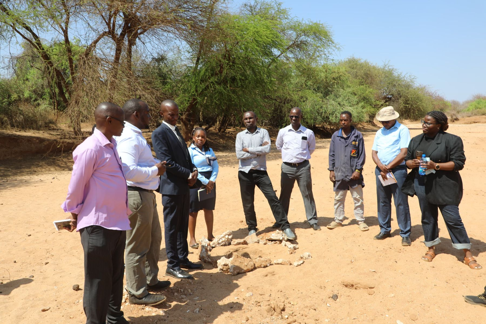
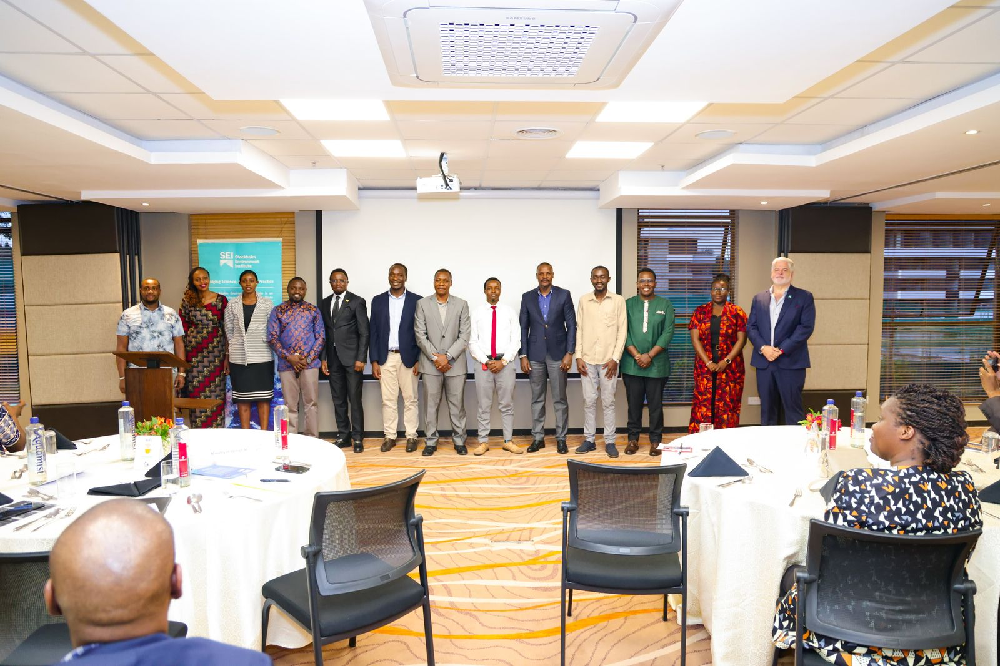
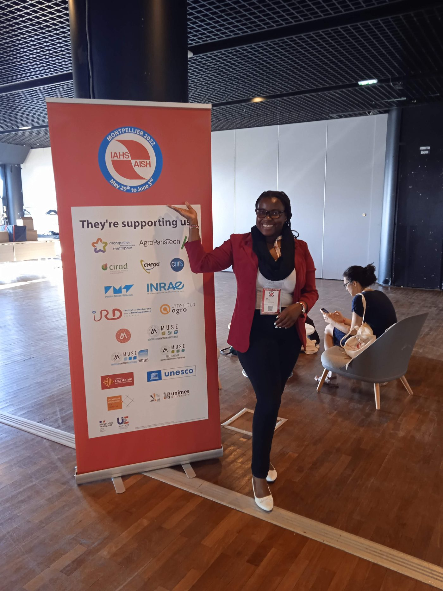

01 Field
Understanding place
Water decisions start with the landscape, the season and the people who use the resource.
Field → data → dialogue → decision
A small set of photographs that show the work as it actually happens: in catchments, with counterparts, and in rooms where evidence has to become a decision.

01 Field
Water decisions start with the landscape, the season and the people who use the resource.

02 Dialogue
Evidence only travels if government counterparts, researchers and programmes can sit with it together.

03 Research journey
Doctoral hydrology and operational work are one story: better evidence for decisions on the ground.